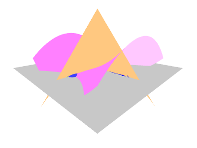

[1] 実数部曲面を作成する
・c pink ･･･ 色をピンクに設定
・p surface np.linspace(-1.5,1.5,30) np.linspace(-1.5,1.5,20) ((x+1j*z)**2+1).real
※ numpy では虚数単位は 1j , 実数部は ().real と記す。
・surface
[2] 虚数部曲面を作成する
・c orange ･･･ 色をオレンジ色に設定
・p surface np.linspace(-1.5,1.5,30) np.linspace(-1.5,1.5,20) ((x+1j*z)**2+1).imag
※ numpy では虚数部は ().imag と記す。
・surface
[3] \(y=0\) 平面を作成する
・c white ･･･ 色を白(灰色)に設定
・polygon 4 4/np.sqrt(2) 0
[4] 虚数解に球を置く
・c blue ･･･ 色を青に設定
・p clear
・p 0 0 1
・p 0 0 -1
・distribute sphere 0.15